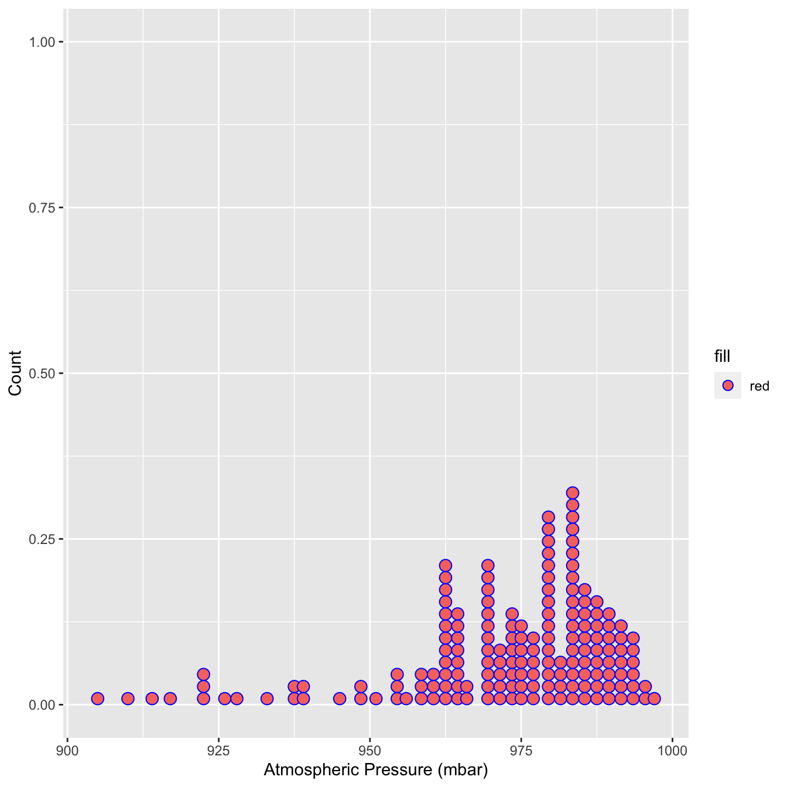

Chapter 4 Data Visualization with R
“The simple graph has brought more information to the data analyst’s mind than any other device.” — John Tukey
This chapter will show you how to use ggplot2 to visualize your data. There are various graphing systems in R, but ggplot2 is one of the most attractive and versatile. ggplot2 implements graphics language, a unified method for describing and creating graphs. By learning one system and using it in multiple locations, you can accomplish more in less time with ggplot2.
4.1 Basics of ggplot2
The tidyverse’s main member, ggplot2, is the subject of this chapter. Load the tidyverse with this code to get access to the datasets, help pages, and functions:
library(tidyverse) # it has ggplot2 package
library(cowplot) # it allows you to save figures in .png fileThat one line of code loads the fundamental tidyverse packages, which are used in practically every data analysis. It also shows you which tidyverse functions clash with base R functions (or from other packages you might have loaded).
If the error message “there is no package called ‘tidyverse’” appears when you execute this code, you must first install it before running library() again.
install.packages("tidyverse")
library(tidyverse)A package only needs to be installed once, but it must be reloaded every time you start a new session.
4.1.1 Importing data
R can read data from a variety of sources, including text files, spreadsheets, statistical packages, and database management systems. We’ll use the mpg dataset to demonstrate these strategies. This dataset comprises data from the US Environmental Protection Agency on 38 different car models.
4.1.1.1 Text files
The readr package provides functions for importing delimited text files into R data frames.
library(readr) # read dataset from file
options(readr.show_col_types = FALSE)
# CSV
mpg_csv <- read_csv("data/mpg.csv")
# TSV
mpg_tsv <- read_tsv("data/mpg.tsv") These functions assume that the variable names are on the first line of data, that values are separated by commas or tabs, and that missing data is represented by blanks.
4.1.1.2 Excel spreadsheets
Data from Excel workbooks can be imported using the readxl program. The formats xls and xlsx are both supported.
library(readxl) # excel
#Excel
mpg_excel <- read_excel("data/mpg.xlsx", sheet='mpg')
head(mpg_excel)## # A tibble: 6 × 12
## ...1 manufacturer model displ year cyl trans drv cty hwy fl class
## <dbl> <chr> <chr> <chr> <dbl> <dbl> <chr> <chr> <dbl> <dbl> <chr> <chr>
## 1 1 audi a4 1,8 1999 4 auto… f 18 29 p comp…
## 2 2 audi a4 1,8 1999 4 manu… f 21 29 p comp…
## 3 3 audi a4 2,0 2008 4 manu… f 20 31 p comp…
## 4 4 audi a4 2,0 2008 4 auto… f 21 30 p comp…
## 5 5 audi a4 2,8 1999 6 auto… f 16 26 p comp…
## 6 6 audi a4 2,8 1999 6 manu… f 18 26 p comp…4.1.1.3 Statistical packages
The haven package contains functions for importing data from many statistical programs such as SAS, SPSS and Stata.
library(haven) # excel
# SAS
mtcars_sas <- read_sas("data/mtcars.sas7bdat")
# SPSS
mtcars_spss <- read_sav("data/mtcars.sav")
# Stata
mtcars_stata <- read_dta("data/mtcars.dta")
head(mtcars_spss)## # A tibble: 6 × 11
## mpg cyl disp hp drat wt qsec vs am gear carb
## <dbl> <dbl> <dbl> <dbl> <dbl> <dbl> <dbl> <dbl> <dbl> <dbl> <dbl>
## 1 21 6 160 110 3.9 2.62 16.5 0 1 4 4
## 2 21 6 160 110 3.9 2.88 17.0 0 1 4 4
## 3 22.8 4 108 93 3.85 2.32 18.6 1 1 4 1
## 4 21.4 6 258 110 3.08 3.22 19.4 1 0 3 1
## 5 18.7 8 360 175 3.15 3.44 17.0 0 0 3 2
## 6 18.1 6 225 105 2.76 3.46 20.2 1 0 3 14.1.2 Scatter plot
The first function in building a graph is the ggplot function. It specifies the
- data frame containing the data to be plotted
- the mapping of the variables to visual properties of the graph. The mappings are placed within the
aesfunction (whereaesstands for aesthetics).
library(tidyverse)
library(ggplot2)
library(readr)
# df
df <- read_csv("data/mpg.csv")
ggplot(data = df) +
geom_point(mapping = aes(x = displ, y = hwy))
The graph demonstrates that engine size (displ) and fuel efficiency have a negative relationship (hwy). To put it another way, cars with large engines consume more fuel. Does this support or disprove your hypothesis concerning engine size and fuel efficiency?
The function ggplot2 is used to start a plot in ggplot2(). ggplot() builds a coordinate system to which layers can be added. The dataset to utilize in the graph is the first parameter to ggplot(). So ggplot(data = mpg_csv) produces an empty graph, which I won’t show here because it’s not that interesting.
By matching the aesthetics of your plot to the variables in your dataset, you may convey information about your data. You can, for example, link the colors of your points to the class variable to reveal each car’s class.
library(tidyverse)
library(ggplot2)
library(readr) # read dataset from file
# df
df <- read_csv("data/mpg.csv")
ggplot(data = df) +
geom_point(mapping = aes(x = displ, y = hwy, color=class))
You can also set the aesthetic properties of your geom manually. For example, we can make all of the points in our plot blue:
library(tidyverse)
library(ggplot2)
library(readr) # read dataset from file
# df
df <- read_csv("data/mpg.csv")
ggplot(data = df) +
geom_point(mapping = aes(x = displ, y = hwy), color="blue")
The color modifies the appearance of the plot rather than conveying information about a variable. Set the aesthetic by name as an argument of your geom function to manually set an aesthetic; i.e. it goes outside of aes(). You’ll need to choose a level that fits that aesthetic:
- The name of a color as a character string.
- The size of a point in mm.
- The shape of a point as a number
Facets in ggplot2:
Splitting your plot into facets, or subplots that each display one subset of the data, is another option, especially for categorical variables. Use facet_wrap() to facet your plot by a single variable. facet_wrap() expects a formula as the first input, followed by a variable name (note that “formula” is the name of a data structure in R, not a synonym for “equation”). facet_wrap() expects a discrete variable as a parameter.
library(tidyverse)
library(ggplot2)
library(readr)
# df
df <- read_csv("data/mpg.csv")
ggplot(data = df) +
geom_point(mapping = aes(x = displ, y = hwy, color=class))+
facet_wrap(~ manufacturer, nrow = 3)Add facet_grid() to your plot call to facet your plot on the combination of two variables. Facet grid(first )’s parameter is likewise a formula. The formula should now have two variable names separated by a comma.
library(tidyverse)
library(ggplot2)
library(readr) # read dataset from file
library(ggpubr)
# df
df <- read_csv("data/mpg.csv")
ggplot(data = df) +
geom_point(mapping = aes(x = displ, y = hwy, color=class))+
facet_grid( drv ~ cyl)
Note: Use a . instead of a variable name if you don’t want to facet in the rows or columns dimension, e.g. + facet grid(. ~ cyl).
library(tidyverse)
library(ggplot2)
library(readr) # read dataset from file
# df
df <- read_csv("data/mpg.csv")
ggplot(data = df) +
geom_point(mapping = aes(x = displ, y = hwy, color=class))+
facet_grid(. ~ cyl)Geometric objects:_
A geom is a geometrical object used to represent data in a plot. Plots are frequently described by the sort of geom they employ. Bar charts, for example, use bar geoms, line charts use line geoms, and boxplots use boxplot geoms. Scatterplots use the point geom to break the trend. As we’ve seen, different __geoms_ can be used to plot the same data. The point geom is used for scatter plot, and the smooth geom, a smooth line suited to the data.To display multiple geoms in the same plot, add multiple geom functions to ggplot() as shown blow:
library(tidyverse)
library(readr) # read dataset from file
library(ggpubr)
# df
df <- read_csv("data/mpg.csv")
ggplot(data = df, mapping = aes(x = displ, y = hwy)) +
geom_point(mapping = aes(color = class)) +
geom_smooth()+
labs(title = "Relationship between displacment and highway of 38 different car models",
subtitle = "Feul economy data from 1999 to 2008",
caption = "source: https://fueleconomy.gov/",
x = "Engine displacement in liters",
y = "Highway mileage",
color = "vehicle class")+
theme_pubr()+
grids(linetype = "dashed")+
theme(axis.text.x = element_text(colour = "grey20", size = 8, angle = 45, hjust = 0.5, vjust = 0.5),
axis.text.y = element_text(colour = "grey20", size = 12),
strip.text = element_text(face = "italic"),
text = element_text(size = 12))
Exercise
# add facet wrap using manufacturer variable
library(tidyverse)
library(ggplot2)
library(readr) # read dataset from file
# df
df <- read_csv("data/mpg.csv")
ggplot(data = df, mapping = aes(x = displ, y = hwy)) +
geom_point(mapping = aes(color = class)) +
geom_smooth(method = 'loess')+
labs(title = "Relationship between displacment and highway of 38 different car models",
subtitle = "Feul economy data from 1999 to 2008",
caption = "source: https://fueleconomy.gov/",
x = "Engine displacement in liters",
y = "Highway mileage",
color = "vehicle class")+
theme_pubr()+
grids(linetype = "dashed")+
theme(axis.text.x = element_text(colour = "grey20", size = 8, angle = 45, hjust = 0.5, vjust = 0.5),
axis.text.y = element_text(colour = "grey20", size = 12),
strip.text = element_text(face = "italic"),
text = element_text(size = 12))library(tidyverse)
library(ggplot2)
library(readr) # read dataset from file
# df
df <- read_csv("data/mpg.csv")
ggplot(data = df, mapping = aes(x = displ, y = hwy)) +
geom_point(mapping = aes(color = class)) +
geom_smooth(method = 'loess')+
facet_wrap(~manufacturer)+
labs(title = "Relationship between displacment and highway of 38 different car models",
subtitle = "Feul economy data from 1999 to 2008",
caption = "source: https://fueleconomy.gov/",
x = "Engine displacement in liters",
y = "Highway mileage",
color = "vehicle class")+
theme_pubr()+
grids(linetype = "dashed")+
theme(axis.text.x = element_text(colour = "grey20", size = 8, angle = 45, hjust = 0.5, vjust = 0.5),
axis.text.y = element_text(colour = "grey20", size = 12),
strip.text = element_text(face = "italic"),
text = element_text(size = 12))4.1.3 Bar Plot
Stacked, clustered, or segmented bar charts are commonly used to show the relationship between two categorical variables.
4.1.3.1 Stacked bar chart
For the autos in the Fuel economy dataset, plot the association between automotive class and drive type (front-wheel, rear-wheel, or 4-wheel drive).
library(tidyverse)
library(ggplot2)
library(readr) # read dataset from file
# df
df <- read_csv("data/mpg.csv")
ggplot(data = df, mapping = aes(x = class, fill=drv)) +
geom_bar(position = "stack") +
labs(title = "Vehicle class frequency by drive type for 38 different automobile models",
subtitle = "Feul economy data from 1999 to 2008",
caption = "source: https://fueleconomy.gov/",
x = "vehicle class",
y = "Count")+
theme_pubclean()+
grids(linetype = "dashed")+
guides(fill=guide_legend("Drive Type"))+
theme(axis.text.x = element_text(colour = "grey20", size = 8, angle = 45, hjust = 0.5, vjust = 0.5),
axis.text.y = element_text(colour = "grey20", size = 12),
strip.text = element_text(face = "italic"),
text = element_text(size = 12))4.1.3.2 Grouped bar chart
library(tidyverse)
library(ggplot2)
library(readr) # read dataset from file
# df
df <- read_csv("data/mpg.csv")
ggplot(data = df, mapping = aes(x = class, fill=drv)) +
geom_bar(position = "dodge") +
labs(title = "Vehicle class frequency by drive type for 38 different automobile models",
subtitle = "Feul economy data from 1999 to 2008",
caption = "source: https://fueleconomy.gov/",
x = "vehicle class",
y = "Count")+
theme_pubclean()+
grids(linetype = "dashed")+
guides(fill=guide_legend("Drive Type"))+
theme(axis.text.x = element_text(colour = "grey20", size = 8, angle = 45, hjust = 0.5, vjust = 0.5),
axis.text.y = element_text(colour = "grey20", size = 12),
strip.text = element_text(face = "italic"),
text = element_text(size = 12))Notice that front-wheel drive is standard on all Minivans. Zero count bars are removed by default, and the remaining bars are made broader. This may not be the desired behavior. The position = position dodge(preserve = "single") option can be used to change this.
library(tidyverse)
library(ggplot2)
library(readr) # read dataset from file
library(ggthemes)
library(ggpubr)
# df
df <- read_csv("data/mpg.csv")
ggplot(data = df, mapping = aes(x = class, fill=drv)) +
geom_bar(position = position_dodge(preserve = "single")) +
labs(title = "Vehicle class frequency by drive type for 38 different automobile models",
subtitle = "Feul economy data from 1999 to 2008",
caption = "source: https://fueleconomy.gov/",
x = "vehicle class",
y = "Count",
fill="Drive type")+
theme_pubclean()+
grids(linetype = "dashed")+
theme(axis.text.x = element_text(colour = "grey20", size = 8, angle = 90, hjust = 0.5, vjust = 0.5),
axis.text.y = element_text(colour = "grey20", size = 12),
strip.text = element_text(face = "italic"),
text = element_text(size = 12))4.2 Boxplots
A boxplot displays the \(25^{th}\) percentile, median, and \(75^{th}\) percentile of a distribution. The whiskers (vertical lines) capture roughly 99% of a normal distribution, and observations outside this range are plotted as points representing outliers (see the figure below).

Boxplot schematics
We can use boxplots to visualize the distribution of weight within each species:
library(tidyverse)
#read the visual treatment for patients dataset
df_vt <- read_csv("./data/visual_treatment.csv")
ggplot(data = df_vt,
mapping = aes(x = Day, y = Value, color=Day)) +
geom_boxplot(alpha=0.5)+
ggtitle('Visual improvement after treatment')
- R appears to be unaware that the order should be One -> Two -> Three. Because the column Day is shown as chr>, which indicates character, R chose to follow the alphabetical order.
- When you want to display characters in a non-alphabetical order, factors are crucial. Factors are variables with a small number of possible values.
- Individual data can sometimes be plotted on top of the boxplot. This can be accomplished in a variety of ways.
- Using geom jitter(), here is a simple solution. For more information, type ?geom_jitter.
library(tidyverse)
library(ggthemes)
library(ggpubr)
#read the visual treatment for patients dataset
df_vt <- read_csv("./data/visual_treatment.csv")
# ordering the treatment
df_vt$Day <- factor(df_vt$Day, levels=c("One","Two","Three"))
ggplot(data = df_vt,
mapping = aes(x = Day, y = Value, color=Day)) +
geom_boxplot(alpha=0.5)+
geom_jitter(width=0.15)+ # show individual data
theme_pubclean()+ # change theme
grids(linetype = "dashed")+ # modify grids type
ggtitle('Visual improvement after treatment')+ # add title
theme(axis.text.x = element_text(colour = "grey20", size = 8, angle = 0, hjust = 0.5, vjust = 0.5),
axis.text.y = element_text(colour = "grey20", size = 12),
strip.text = element_text(face = "italic"),
text = element_text(size = 12))
4.3 Plotting time series data
Let’s calculate number of counts per year for each genus. First we need to group the data and count records within each group:
4.4 Line Plot
data(country.map, package = "choroplethrMaps")
head(unique(country.map$region), 30)## [1] "afghanistan" "angola" "azerbaijan" "moldova" "madagascar"
## [6] "mexico" "macedonia" "mali" "myanmar" "montenegro"
## [11] "mongolia" "mozambique" "mauritania" "burundi" "malawi"
## [16] "malaysia" "namibia" "france" "niger" "nigeria"
## [21] "nicaragua" "netherlands" "norway" "nepal" "belgium"
## [26] "new zealand" "oman" "pakistan" "panama" "peru"library(readr)
library(tidyverse)
gap <- read_csv("data/gapminder.csv")
# Select US cases
library(dplyr)
plotdata <- filter(gap,
country == "Ethiopia")
# simple line plot
ggplot(plotdata,
aes(x = year,
y = lifeExp)) +
geom_line()+
theme_pubr()+
grids(linetype = "dashed")
library(ggplot2)
library(ggthemes)
gap <- read_csv("data/gapminder.csv")
# line plot with points
# and improved labeling
ggplot(plotdata,
aes(x = year,
y = lifeExp)) +
geom_line(size = 1.5,
color = "lightgrey") +
geom_point(size = 3,
color = "steelblue") +
labs(y = "Life Expectancy (years)",
x = "Year",
title = "Life expectancy changes over time",
subtitle = "Ethiopia (1952-2007)",
caption = "Source: http://www.gapminder.org/data/")+
theme_pubclean()+
grids(linetype = "dashed")# prepare dataset
data(gapminder, package = "gapminder")
plotdata <- gapminder %>%
filter(year == 2007) %>%
rename(region = country,
value = lifeExp) %>%
mutate(region = tolower(region)) %>%
mutate(region = recode(region,
"united states" = "united states of america",
"congo, dem. rep." = "democratic republic of the congo",
"congo, rep." = "republic of congo",
"korea, dem. rep." = "south korea",
"korea. rep." = "north korea",
"tanzania" = "united republic of tanzania",
"serbia" = "republic of serbia",
"slovak republic" = "slovakia",
"ethiopia" = "democratic republic of ethiopia",
"yemen, rep." = "yemen"))Now lets create the map
4.5 Histograpm
Marriage <- read_csv("data/marriage.csv")
# plot the histogram with a binwidth of 5
ggplot(Marriage, aes(x = age)) +
geom_histogram(fill = "cornflowerblue",
color = "white",
binwidth = 5) +
labs(title="Participants by age",
subtitle = "binwidth = 5 years",
x = "Age")
data(gapminder, package="gapminder")
# subset Asian countries in 2007
library(dplyr)
plotdata <- gapminder %>%
filter(continent == "Africa" &
year == 2007)
# Sorted Cleveland plot
ggplot(plotdata,
aes(x=lifeExp,
y=reorder(country, lifeExp))) +
geom_point(color="blue",
size = 2) +
geom_segment(aes(x = 40,
xend = lifeExp,
y = reorder(country, lifeExp),
yend = reorder(country, lifeExp)),
color = "lightgrey") +
labs (x = "Life Expectancy (years)",
y = "",
title = "Life Expectancy by Country",
subtitle = "GapMinder data for Africa - 2007") +
theme_minimal() +
theme(panel.grid.major = element_blank(),
panel.grid.minor = element_blank())- Reunion clearly has the highest life expectancy, while Afghanistan has the lowest by far. This last plot is also called a lollipop graph (you can see why).
4.6 Arranging plots into a grid
The cowplot package provides the function plot_grid() to arrange plots into a grid and label them.
p1 <- ggplot(mtcars, aes(disp, mpg, color=as.factor(cyl))) +
geom_point()+
labs(
x='Engine displament in litters',
y= "Mileage Per Hour",
color="Vehicle Cylinder Type")+
theme_cowplot()+
theme(axis.text.x = element_text(color='grey20',
size=10,
angle = 0,
hjust=0.5,
vjust=0.5),
axis.text.y = element_text(color='grey20',
size=12),
strip.text = element_text(face='italic'),
text = element_text(size=12))
p2 <- ggplot(mtcars, aes(qsec, mpg, color=as.factor(cyl))) +
geom_point()+
labs(
caption = 'Souce: https://fueleconomy.gov',
x='Engine displament in litters',
y= "Mileage Per Hour",
color="Vehicle Cylider Type")+
theme_cowplot()+
theme(axis.text.x = element_text(color='grey20',
size=10,
angle = 0,
hjust=0.5,
vjust=0.5),
axis.text.y = element_text(color='grey20',
size=12),
strip.text = element_text(face='italic'),
text = element_text(size=12))
plot_grid(p1, p2, labels = c('A', 'B'), label_size = 12,ncol = 2, align = "h")